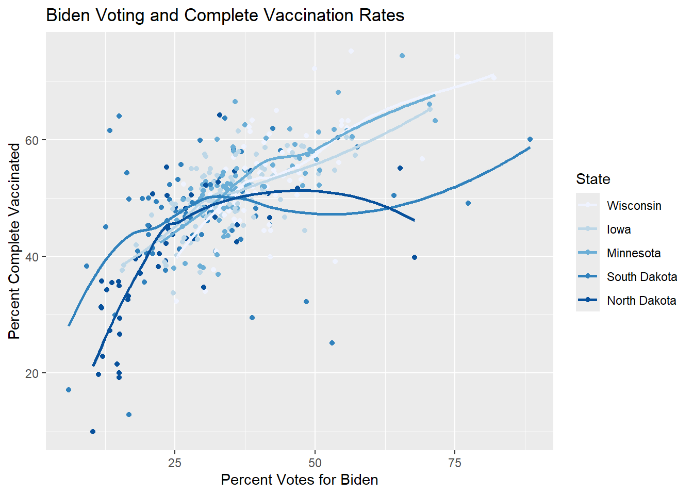
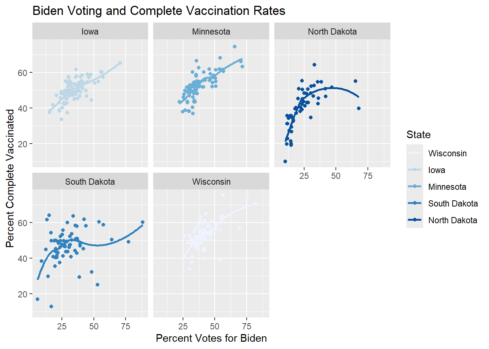
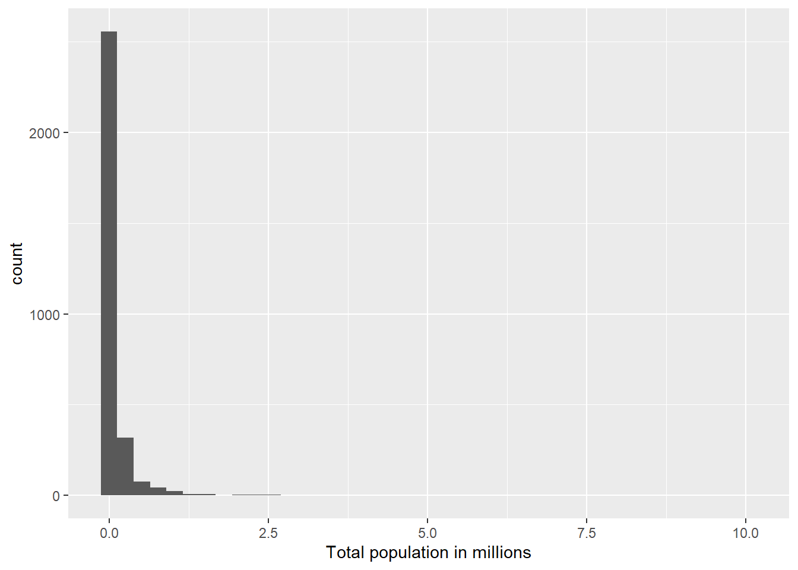
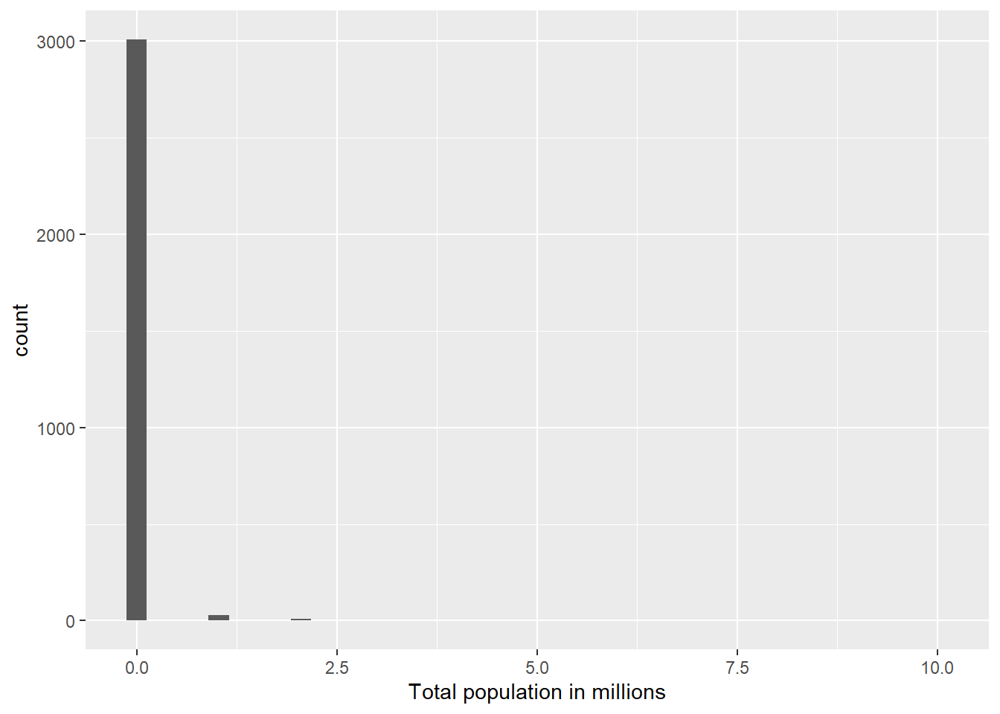
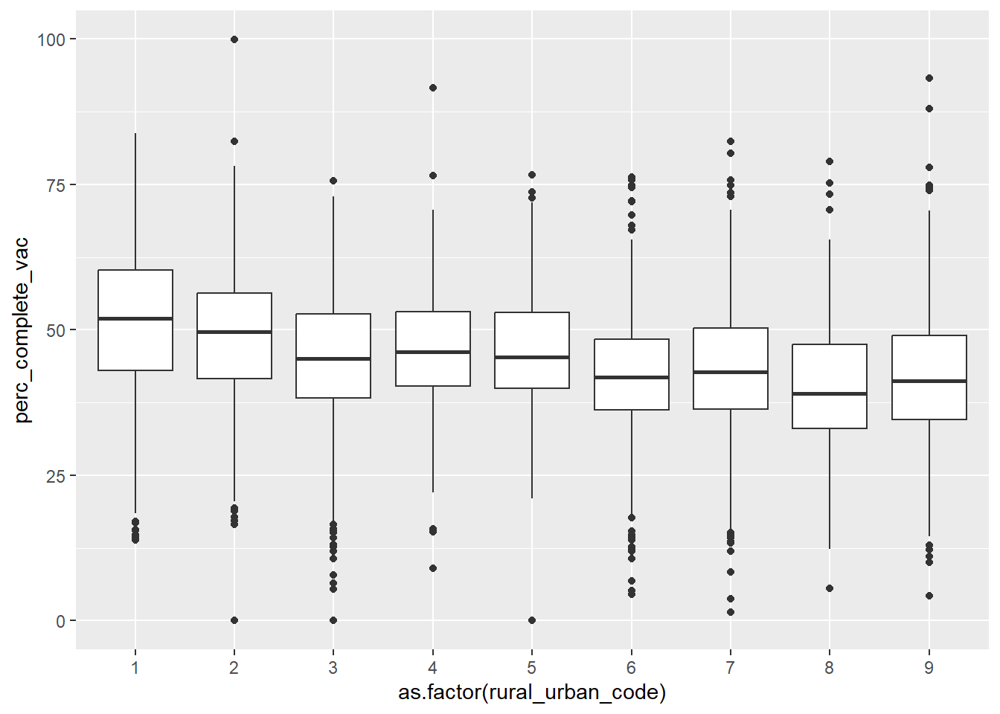
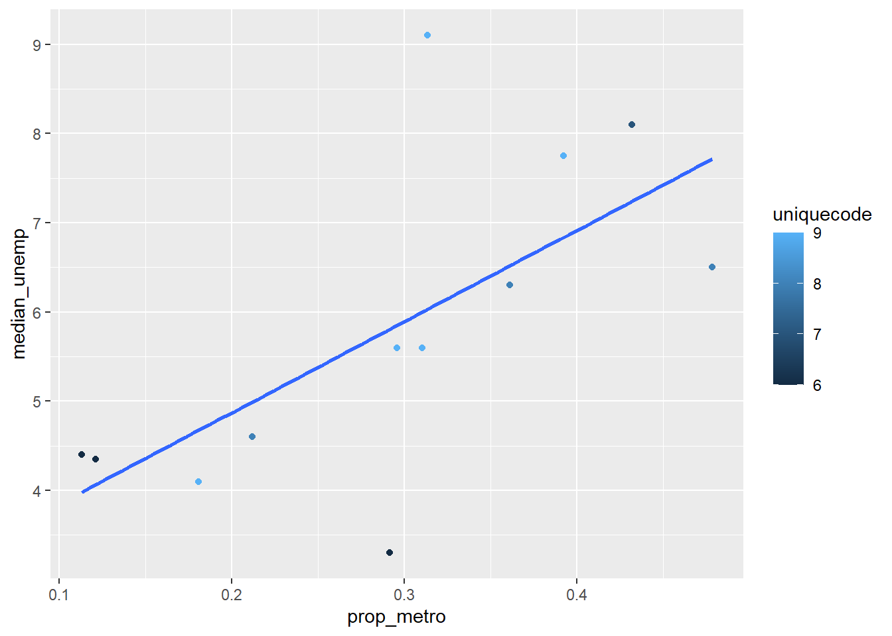

You can download this .qmd file from here. Just hit the Download Raw File button.
Determinants of COVID vaccination rates
First, a little detour to describe several alternatives for reading in data:
If you navigate to my Github account, and find the 264_fall_2026 repo, there is a Data folder inside. You can then click on vacc_Mar21.csv to see the data we want to download. This link should also get you there, but it’s good to be able to navigate there yourself.
Approach 1: create a Data folder in the same location where this .qmd file resides, and then store vaccinations_2021.csv in that Data folder
2
Approach 2: give R the complete path to the location of vaccinations_2021.csv, starting with Home (~)
3
Approach 3: link to our course webpage, and then know we have a Data folder containing all our csvs
4
Approach 4: navigate to the data in GitHub, hit the Raw button, and copy that link
A recent Stat 272 project examined determinants of covid vaccination rates at the county level. Our data set contains 3053 rows (1 for each county in the US) and 14 columns; here is a quick description of the variables we’ll be using:
state = state the county is located in
county = name of the county
region = region the state is located in
metro_status = Is the county considered “Metro” or “Non-metro”?
rural_urban_code = from 1 (most urban) to 9 (most rural)
perc_complete_vac = percent of county completely vaccinated as of 11/9/21
tot_pop = total population in the county
votes_Trump = number of votes for Trump in the county in 2020
votes_Biden = number of votes for Biden in the county in 2020
perc_Biden = percent of votes for Biden in the county in 2020
ed_somecol_perc = percent with some education beyond high school (but not a Bachelor’s degree)
ed_bachormore_perc = percent with a Bachelor’s degree or more
unemployment_rate_2020 = county unemployment rate in 2020
median_HHincome_2019 = county’s median household income in 2019
Consider only Minnesota and its surrounding states (Iowa, Wisconsin, North Dakota, and South Dakota). We want to examine the relationship between the percentage who voted for Biden and the percentage of complete vaccinations by state. Generate two plots to examine this relationship:
A scatterplot with points and smoothers colored by state. Make sure the legend is ordered in a meaningful way, and include good labels on your axes and your legend. Also leave off the error bars from your smoothers.
library(tidyverse)vaccine_data |>filter(state %in%c("Minnesota", "Wisconsin", "Iowa", "North Dakota", "South Dakota")) |>ggplot(aes(x = perc_Biden, y = perc_complete_vac, color =fct_reorder2(state, perc_Biden, perc_complete_vac))) +geom_point() +geom_smooth(se =FALSE) +labs(title ="Biden Voting and Complete Vaccination Rates",x ="Percent Votes for Biden",y ="Percent Complete Vaccinated",color ="State" ) +scale_color_brewer()
`geom_smooth()` using method = 'loess' and formula = 'y ~ x'

One plot per state containing a scatterplot and a smoother.
library(tidyverse)vaccine_data |>filter(state %in%c("Minnesota", "Wisconsin", "Iowa", "North Dakota", "South Dakota")) |>ggplot(aes(x = perc_Biden, y = perc_complete_vac, color =fct_reorder2(state, perc_Biden, perc_complete_vac))) +geom_point() +geom_smooth(se =FALSE) +labs(title ="Biden Voting and Complete Vaccination Rates",x ="Percent Votes for Biden",y ="Percent Complete Vaccinated",color ="State" ) +scale_color_brewer() +facet_wrap("state")
`geom_smooth()` using method = 'loess' and formula = 'y ~ x'

Describe which plot you prefer and why. What can you learn from your preferred plot?
For overall trends, I would prefer the first plot, because it is easier to look at how often people get vaccinated when the plots are all put together on one graph. I can learn that Wisconsin has the highest rate of complete vaccinations in the Midwest states we selected and that South Dakota had the highest percentage of people who voted for Biden.
We wish to compare the proportions of counties in each region with median household income above the national median ($69,560).
Fill in the blanks below to produce a segmented bar plot with regions ordered from highest proportion above the median to lowest.
Create a table of proportions by region to illustrate that your bar plot in (a) is in the correct order (you should find two regions that are really close when you just try to eyeball differences).
You can’t replace the code without .fun because then there is no value for R to compare the differing incomes to. The .fun provides a summary statistic in the form of the mean that can then be placed in order.
# og code'vaccine_data |> mutate(HHincome_vs_national = ifelse(median_HHincome_2019 < 69560, FILL IN CODE)) |> mutate(region_sort = fct_relevel(region, FILL IN CODE)) |> ggplot(mapping = aes(x = region_sort, fill = HHincome_vs_national)) + geom_bar(position = "fill") '
We want to examine the distribution of total county populations and then see how it’s related to vaccination rates.
Carefully and thoroughly explain why the two histograms below provide different plots.
vaccine_data |>mutate(tot_pop_millions = tot_pop /1000000) |>ggplot(mapping =aes(x = tot_pop_millions)) +geom_histogram(bins =40) +labs(x ="Total population in millions")

vaccine_data |>mutate(tot_pop_millions = tot_pop %/%1000000) |>ggplot(mapping =aes(x = tot_pop_millions)) +geom_histogram(bins =40) +labs(x ="Total population in millions")

Find the top 5 counties in terms of total population.
Plot a histogram of logged population and describe this distribution.
Plot the relationship between log population and percent vaccinated using separate colors for Metro and Non-metro counties (be sure there’s no 3rd color used for NAs). Reduce the size and transparency of each point to make the plot more readable. Describe what you can learn from this plot.
Produce 3 different plots for illustrating the relationship between the rural_urban_code and percent vaccinated.
Hint: you can sometimes turn numeric variables into categorical variables for plotting purposes (e.g. as.factor(), ifelse()).
vaccine_data |>ggplot(mapping =aes(x =as.factor(rural_urban_code), y = perc_complete_vac)) +geom_boxplot()

vaccine_data |>ggplot(mapping =aes(x =as.factor(rural_urban_code),fill = perc_complete_vac >50)) +geom_bar(position ="fill") +labs(x ="Urban to Rural Scale",y ="Proportion of Complete Vaccinations over 50%",fill ="Complete Vaccinations over 50%",title ="Urban to Rural Regions and the Proportion of Complete Vaccinations")
State your favorite plot, why you like it better than the other two, and what you can learn from your favorite plot. Create an alt text description of your favorite plot, using the Four Ingredient Model. See this link for reminders and references about alt text.
My favorite plot was the segmented bar chart because I felt it was personally the most readable of the graphs. I can see the county with the least complete vaccinations.
This is a segmented bar graph showing the proportion of regions with at least 50% complete vaccinations and ordered based on how rural and urban they are. The X axis is measured on the urban to rural scale, a discrete range going from 1 to 9, with 1 being the most urban region, and 9 being the most rural region. The Y axis displays the proportion of complete vaccinations over 50%, where the proportions range from 0 to 1 and goes up in intervals of 0.25. The graph is segmented by two colors showing that a given urban to rural area on the X axis had a certain proportion of complete vaccinations that it is scaled to on the Y axis. From the graph, the most urban regions had the highest proportion of regions with vaccinations over 50%, at around 58%. The rest of the graph shows an overall trend of decreased vaccination rates the higher the regions scored on the urban to rural scale, with the regions on the eighth section reaching the lowest of around 20% having at least half of the population vaccinated.
BEFORE running the code below, sketch the plot that will be produced by R. AFTER running the code, describe what conclusion(s) can we draw from this plot?
vaccine_data |>filter(!is.na(perc_Biden)) |>mutate(big_states =fct_lump(state, n =10)) |>group_by(big_states) |>summarize(IQR_Biden =IQR(perc_Biden)) |>mutate(big_states =fct_reorder(big_states, IQR_Biden)) |>ggplot() +geom_point(aes(x = IQR_Biden, y = big_states))
Virginia has the biggest range in Biden voters. Tennessee is more homogeneous with its voting trends. Graphing the IQR is something new to me, it’s a good way to quantify ranges.
In this question we will focus only on the 12 states in the Midwest (i.e. where region == “Midwest”).
Create a tibble with the following information for each state. Order states from least to greatest state population.
number of different rural_urban_codes represented among the state’s counties (there are 9 possible)
Use your tibble in (a) to produce a plot of the relationship between proportion of Metro counties and median unemployment rate. Points should be colored by the number of different rural_urban_codes in a state, but a single linear trend should be fit to all points. What can you conclude from the plot?
Warning: The following aesthetics were dropped during statistical transformation:
colour.
ℹ This can happen when ggplot fails to infer the correct grouping structure in
the data.
ℹ Did you forget to specify a `group` aesthetic or to convert a numerical
variable into a factor?

From the plot I can conclude that the higher the proportion of counties that are metro, on average the median unemployment rate rises as well.
Generate an appropriate plot to compare vaccination rates between two subregions of the US: New England (which contains the states Maine, Vermont, New Hampshire, Massachusetts, Connecticut, Rhode Island) and the Upper Midwest (which, according to the USGS, contains the states Minnesota, Wisconsin, Michigan, Illinois, Indiana, and Iowa). What can you conclude from your plot?
#do this later
In this next section, we consider a few variables that could have been included in our data set, but were NOT. Thus, you won’t be able to write and test code, but you nevertheless should be able to use your knowledge of the tidyverse to answer these questions.
Here are the hypothetical variables:
HR_party = party of that county’s US Representative (Republican, Democrat, Independent, Green, or Libertarian)
people_per_MD = number of residents per doctor (higher values = fewer doctors)
perc_over_65 = percent of residents over 65 years old
perc_white = percent of residents who identify as white
Describe the tibble temp created above. What would be the dimensions? What do rows and columns represent?
Group_by tells us how many rows are in the tibble which is 3 because 3 groups were made by the cut_number function, the numbers of columns are given by the summarize function (at least 3), and then 1 more for the group name. This temp tibble is 3 rows by 4 columns. Each row represents one third of the data when it has been altered by the cut_number function, and then the summarized data from within the first third of the data has had the count of observations, mean of the percent vaccinated, and the mean of the percentage of white population.
What would happen if we replaced new_perc_vac = ifelse(perc_complete_vac > 95, NA, perc_complete_vac) with new_perc_vac = ifelse(perc_complete_vac > 95, perc_complete_vac, NA)?
If we switched the orders then the percentages that are over 95 get set to perc_complete_vac as opposed to NA values and the ones that are under or equal to 95 get set to NA. The remaining values are then switched to be much higher when the mean is taken of new_perc_vac, with all the NA values being removed.
What would happen if we replaced mean_white = mean(perc_white, na.rm = TRUE) with mean_white = mean(perc_white)?
If we removed the na.rm = TRUE then the NA values would remain and all the values in that column would be NA, as R throws an NA value when attempting to calculate the mean with an NA value still included.
What would happen if we removed group_by(MD_group)?
If we removed group_by(MD_group) then there would be a lot more rows in the tibble because the group_by function is what reduces it to only being 3. The rest of the data set would still be there.
Hypothetical R chunk #2:
# Hypothetical R chunk 2ggplot(data = vaccine_data) +geom_point(mapping =aes(x = perc_over_65, y = perc_complete_vac, color = HR_party)) +geom_smooth()temp <- vaccine_data |>group_by(HR_party) |>summarise(var1 =n()) |>arrange(desc(var1)) |>slice_head(n =3)vaccine_data |>ggplot(mapping =aes(x =fct_reorder(HR_party, perc_over_65, .fun = median), y = perc_over_65)) +geom_boxplot()
Why would the first plot produce an error?
The aesthetics mapping is only sent to the geom_point function, when it should have been either copied into the geom_smooth again or just put in the ggplot to begin with. Geom_smooth only has the data to read.
Describe the tibble temp created above. What would be the dimensions? What do rows and columns represent?
Arranged the rows by count of how many people align with each party in descending order. Then the first 3 rows of people has been selected, so there are 3 rows. There are 2 columns, one for var1 and one for the HR_party. (3 by 2 tibble.) The first row has the most number of people in the political party, the second has the second most, and the third has the third most.
What would happen if we replaced fct_reorder(HR_party, perc_over_65, .fun = median) with HR_party?
The data would stay at its default status and wouldn’t be leveled in order of ascending percentages over 65.
Hypothetical R chunk #3:
# Hypothetical R chunk 3vaccine_data |>filter(!is.na(people_per_MD)) |>mutate(state_lump =fct_lump(state, n =4)) |>group_by(state_lump, rural_urban_code) |>summarise(mean_people_per_MD =mean(people_per_MD)) |>ggplot(mapping =aes(x = rural_urban_code, y = mean_people_per_MD, colour =fct_reorder2(state_lump, rural_urban_code, mean_people_per_MD))) +geom_line()
Describe the tibble piped into the ggplot above. What would be the dimensions? What do rows and columns represent?
Five rows created by the fct_lump. The four most common states have been preserved, with the rest being put into an other category. They are then grouped by state and how rural and urban they are, which adds on 2 columns as well as one more column for the mean_people_per_MD created by the summarize function. There are 5 rows and 3 columns.
Carefully describe the plot created above.
The plot created is a line graph with data points being mapped on the x axis by the Urban to Rural scale, which goes from 1-9 (1 being the most urban, 9 being the most rural), and on the y axis it is ranked by the mean number of people per medical doctor. There would be 9 points made for each line, and 5 lines made total, because the urban rural scale groups together the data by how rural and urban the region is, and the state_lump function has kept 4 of the most common states with the fifth being the remaining states grouped together. Each line will be colored by state and then the lines will be ordered by the largest mean people per doctor associated with the highest rural urban code, letting the colors match the legend.
What would happen if we removed filter(!is.na(people_per_MD))?
If we removed the filter, then the mean_people_per_MD would appear as an NA value because there would be an NA value that R can’t do operations with. The ggplot would not be able to be plotted because of the NA value.
What would happen if we replaced fct_reorder2(state_lump, rural_urban_code, mean_people_per_MD) with state_lump?
If we removed the fct_reorder2 and put state_lump instead, the colors of rural_urban_code and mean_people_per_MD wouldn’t be ordered by the ranked values of state_lump and would just be categorized randomly.